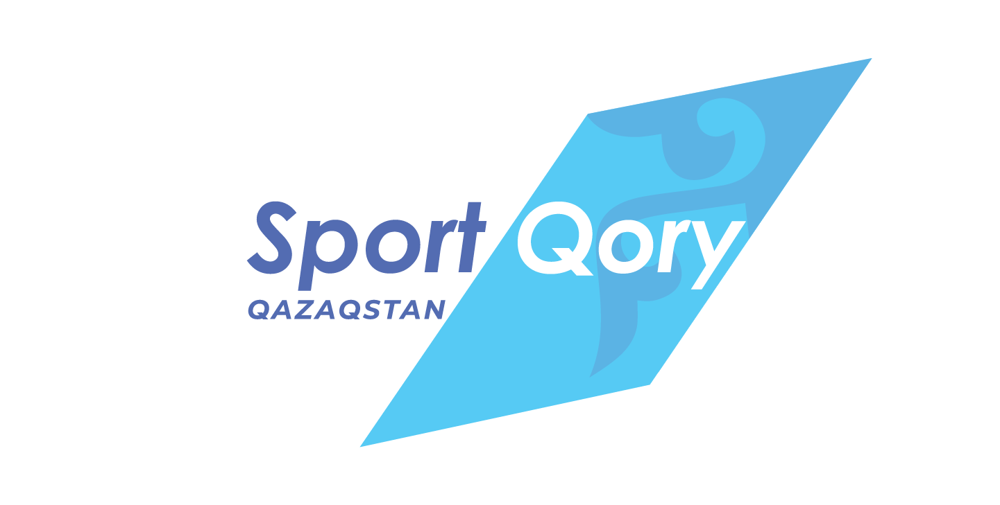

Наши Партнёры

ГЕНЕРАЛЬНЫЙ ПАРТНЁР

ПАРТНЁР
ГЕНЕРАЛЬНЫЙ ПАРТНЁР
ПАРТНЁР
В числе приоритетных задач федерации не только достижение сурдо дзюдоистами страны высоких спортивных результатов на международной арене, но и воспитание молодежи гармонично-развитыми, физически крепкими. В достижении последнего, одна из главных составляющих – спорт.
Если говорить об успехах казахстанских сурдо дзюдоистов, то первым, по-настоящему значимым триумфом, является золотая медаль Еркебулана Канафина на Сурдлимпиаде 2022 года в Кишас де Сул (Бразилия). Медальную поступь на самых важных соревнованиях – Сурдлимпийских Играх продолжил Алдибек Нурмухамед, серебряный призер Игр.
Можем гордиться и успехами нашей сборной на Чемпионате Азии 2023 года, проходившей в городе Бишкек (Киргизия), где наша сборная завоевала 6 золотых медалей.
Работа по активному развитию сурдо дзюдо в стране и покорению спортивных вершин продолжается. Мы уверены, что образование Федерации сурдо дзюдо Казахстана, придаст новый импульс в развитии и популяризации дзюдо для глухих и слабослышащих спортсменов.